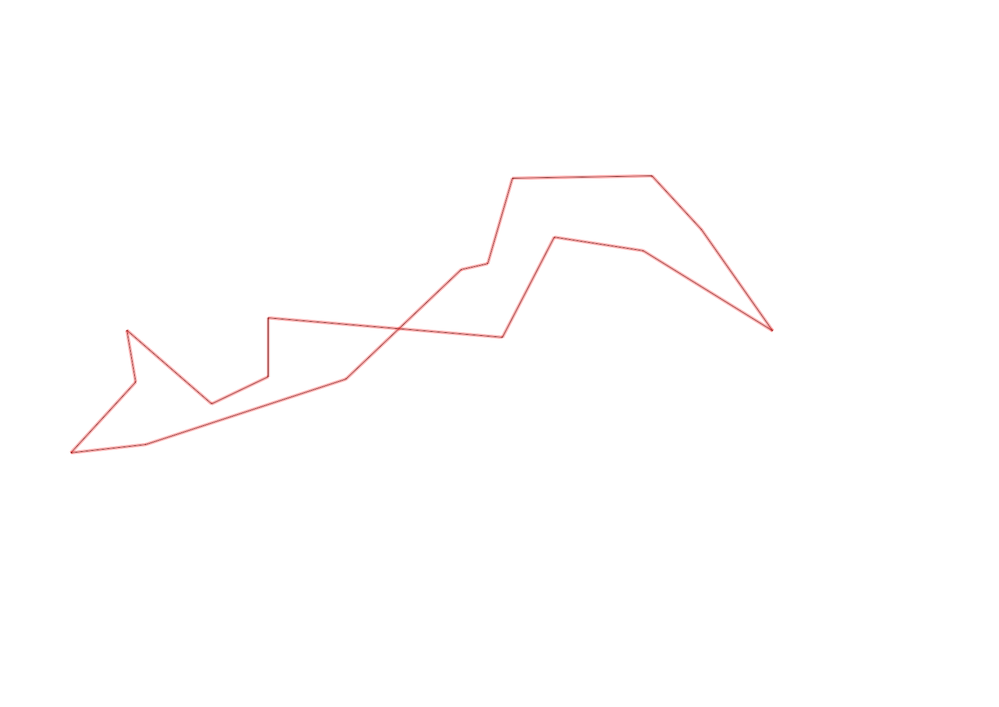
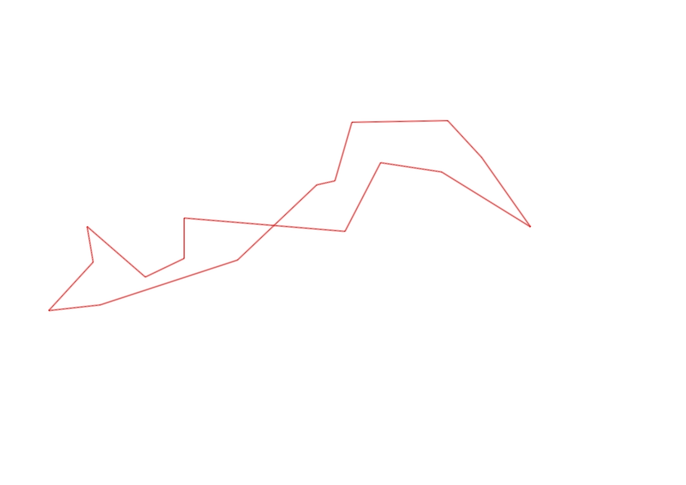

| Control |
Points |
Time Punched |
Distance |
Your Time |
Pace |
Place |
Fastest Time |
Median Time |
% Behind Fastest |
| 33 |
30 |
|
0.34 |
0:02:32 |
07:27 |
1 / 2 |
0:02:32 |
0:04:48 |
0% |
| 31 |
30 |
|
0.06 |
0:02:06 |
35:00 |
1 / 3 |
0:02:06 |
0:02:21 |
0% |
| 34 |
30 |
|
0.19 |
0:06:39 |
35:00 |
1 / 1 |
0:06:39 |
0:06:39 |
0% |
| 108 |
100 |
|
0.3 |
0:05:29 |
18:16 |
3 / 3 |
0:03:10 |
0:05:28 |
73% |
| 109 |
100 |
|
0.15 |
0:03:33 |
23:40 |
1 / 2 |
0:03:33 |
0:06:02 |
0% |
| 52 |
50 |
|
0.26 |
0:04:21 |
16:43 |
2 / 2 |
0:02:49 |
0:03:35 |
54% |
| 50 |
50 |
|
0.32 |
0:02:52 |
08:57 |
1 / 1 |
0:02:52 |
0:02:52 |
0% |
| 123 |
20 |
|
0.19 |
0:03:32 |
18:35 |
4 / 4 |
0:01:32 |
0:02:21 |
130% |
| 47 |
40 |
|
0.24 |
0:02:56 |
12:13 |
1 / 1 |
0:02:56 |
0:02:56 |
0% |
| 58 |
50 |
|
0.5 |
0:11:31 |
23:02 |
1 / 1 |
0:11:31 |
0:11:31 |
0% |
| 126 |
20 |
|
0.13 |
0:00:57 |
07:18 |
1 / 1 |
0:00:57 |
0:00:57 |
0% |
| 130 |
30 |
|
0.13 |
0:00:35 |
04:29 |
1 / 2 |
0:00:35 |
0:01:05 |
0% |
| 32 |
30 |
|
0.24 |
0:01:32 |
06:23 |
1 / 1 |
0:01:32 |
0:01:32 |
0% |
| 44 |
40 |
|
0.11 |
0:01:25 |
12:52 |
3 / 4 |
0:01:05 |
0:01:17 |
30% |
| 53 |
50 |
|
0.2 |
0:02:57 |
14:45 |
2 / 2 |
0:02:31 |
0:02:44 |
17% |
| 45 |
40 |
|
0.16 |
0:01:03 |
06:33 |
3 / 6 |
0:00:59 |
0:01:04 |
6% |
| Finish |
0 |
|
0.45 |
0:06:10 |
13:42 |
1 / 1 |
0:06:10 |
0:06:10 |
0% |
Total Distance Covered: 3.97km
Points Scored: 710
Late Penalty: -20
Final Score: 690
Total Time: 1hours 0minutes 10seconds
Efficiency: 173.8 points/km
 
